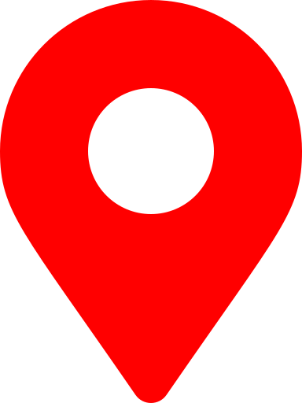

Les différents points de d'intèrêts à Nancy
Stations vélib Stan Parking Voitures  Géolocalisation
Les différentes API utilisés :
Géolocalisation IP
Géoservices Nancy : Parking
Stations Vélib'
La carte
Consultez la base de données :
Liste des parkings
Liste des vélos